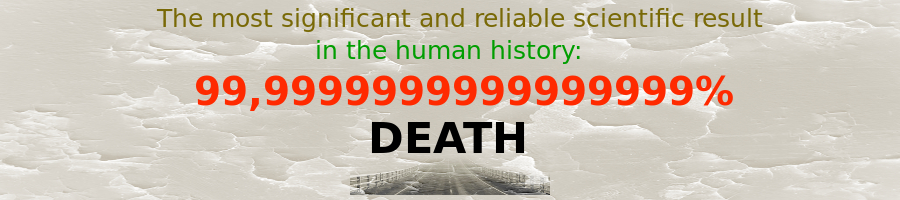
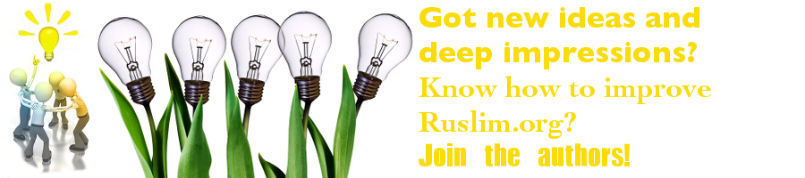

Epistemological Tutorial
Ruslim.Org is a practical guide to ignorance/knowledge: we study quantitative aspects of what we know and how, applying them to real situations, in order to improve ourselves and society (read in full).
Don't know where to start? Start with Death –> The end of life –> Death: practical –> Read Confession by Leo Tolstoy
Tutorial "Death & Life":
(1,2,… – claims; I,II,… – conclusions; see also links)
- 1: Rational activity assumes a goal/aspiration, justifying the activity
- 2: The goal of a rational activity lies after its end
- 3: Death is an inevitable end of life
- I: –1 + 2 + 3–> The end/goal of life is at/after death
- 4: Anything beyond life belongs to beliefs
- II: –I + 4–> The goal of the entire (rational) life has something to do with beliefs
- III: –1–> Life without an overarching aim is irrational, especially empirically
- VII.1: –I + II + III–> The goal of life is impossible without a belief. Life without a belief is irrational
- …
Read also: How to read | Who Are We? | Etymology of Ruslim
Latest essays
Featured content
Death
I. Death is an inevitable outcome of our lives. It is an empirical experiment with practically 100% yield [1]. Whoever lives will die. Death is an event of termination of the physical existence we know as "biological life". Nobody has ever escaped such a termination of life — the physical death.
Therefore, death is one of the most reliable empirical results. In its persistence it exceeds many things one considers permanent: The sun may not rise again tomorrow (induction problem), but we will die.
II. Death is ultimately connected with life. There is no death without association with life. And although life can be thought of as eternal (the Hereafter, Paradise), the death comes only when there is a life, a form of existence. Thus, life is a prerequisite for death, it is a necessary condition for it.
So "What is life?". It is death. It is not completely death, but it is necessarily defined by death among other things, and since it makes life cease, we argue it is the most important part of the definition. What is your life? It is death. Perhaps, it is not the first thing coming to one's mind when asked such a question.
The suffering increases, and before he can turn around the patient discovers what he already knew: the thing he had taken for a mere indisposition is in fact the most important thing on earth to him, is in fact death (Leo Tolstoy, Confession).

III. So do not waste your time thinking that some idea (technology), some mere belief will make you unreachable for death. Rather most of the ideas will vanish with time (another reliable empirical result), but death will stay. Start thinking already now!
We are all terminal, the only question is: How much time do we have? (popular movie).
You may find useful the following: Death: Practical conclusions and exercises
[1] Due to the finite sample it can never reach 100% in theory, but in practice it does.
Miller effect
The miller effect in reasoning refers to situations when one ("the miller", see below) replaces the primary question or goal of reasoning ("the mill") with secondary questions and goals ("the river") and answers the secondary questions or pursues the secondary goals as if they were primary ("the river is the mill itself") or as if the primary ones did not exist. The miller effect also creates an illusion of the answer, definitiveness, and certainty, since something is really answered. In other words, the miller effect is not (necessarily) a logical flaw.
This effect is illustrated with the following:
Let us imagine a man whose only means of subsistence is a mill. This man, the son and grandson of a miller, knows well by tradition how to manage all parts of the mill so that it grinds satisfactorily. Without any knowledge of mechanics he adjusts the machinery as best he can, so that the flour is well ground and good and he lives and earns his keep.
But having heard some vague talk of mechanics, he begins to think about the arrangement of the mill and to observe what makes what turn.
From the mill-stones to the rind, from the rind to the shaft, from the shaft to the wheel, from the wheel to the sluice, to the dam, and to the water, he comes to the conclusion that everything depends on the dam and the river. And he is so delighted by this discovery that instead of testing the quality of the flour as he used to, and raising or lowering the mill-stones, clamping them, and tightening or loosening the belt, he begins to study the river. And his mill falls quite out of order. People begin to tell him he is making a mistake, but he disputes this and continues to reason about the river. And he concerns himself so much and for so long a time with this, and discusses it so eagerly and hotly with those who point out the mistake in his way of thinking, that at last he convinces himself that the river is the mill itself.
To all proofs of the error of his reasoning such a miller will reply: 'No mill grinds without water, so to know the mill one must know how to let the water run, one must know the force of its current and where it comes from—in a word, to know the mill you must get to know the river.'
The miller's argument is logically irrefutable. The only way to undeceive him is to show him that what is most important in any argument is not so much the argument itself as the place it occupies, that is to say, that to think effectively it is essential to know what one should consider first and what later. He must be shown that a rational plan of activity differs from an irrational one in that its elements are arranged in the order of their importance: which should come first, second, third, tenth, and so on, while irrational plans lack that sequence. It is also necessary to show him that the decision of this order is not fortuitous, but depends on the purpose for which the activity is planned.
This ultimate aim also determines the sequence in which the separate reflections should be arranged so as to be sensible. An argument not connected with the end in view is absurd, however logical it may be.
The miller's aim is to grind well, and this aim, if he keeps it in view, will determine for him the indubitable order and sequence of his reflections about the mill-stones, the wheel, the dam, and the river.
Without such reference to their aim, the miller's reflections, however fine and logical and beautiful in themselves, will be false, and, above all, meaningless: they will be like the speculations of Gogol's Kifa Mokievich, who calculated what the thickness of an elephant's egg-shell would be if elephants were hatched from eggs, like birds.
And such, in my opinion, are the discussions of our contemporary science about life.
(Leo Tolstoy, On Life)
No life without end: empirical test
If there exists a result of the whole life, it became apparent only outside of the time span between birth and death (in particular, after life, that is death; see in detail End of Life). Moreover, any reasonable activity, such as life, must have such a goal, necessarily defined through belief (Importance of goal and End of life and belief) [1].
So, how do they live, those who reckon life as having no ends?
[1] Note that even if one thinks that life does not necessarily have a goal, they do it out of belief. In other words, they believe that life has no goals. Thus, it is a sheer belief, for example, that there is no life after death.
See also:
End of life | Death |
Confession
The end of life
1. Purpose vs. goal of life
The purpose of life is that meaning and significance that a human being imparts to his life and that influence the way one should live his life to attain a happy life (without defining the latter). In fact, the definition of what constitutes a happy life makes difference in what people consider their personal purposes in life. Example: my purpose of life is to teach children, to heal people, to become one of the best surgeons, to earn money for helping people in need, to become a president.
The goal of (the entire) life, on the other hand, is the final result of one's life, its outcome, the destination and result of all life's activities. This result justifies a human life, motivates a human being, and tells why and what he/she lives for, what he/she tries to achieve at the end of life, what he/she strives for.
Conclusion 1: According to these definitions, the purpose of life is about the process, the way we live our lives, whereas the goal of life is for the end of it, its final result.
Corollary 1: The goal, pursued in life, may create a purpose in one's life. Similarly, the goal of the entire life may create a purpose for the whole life.
Remark 1: The goal is being defined here broadly: This is a strife, desire, and yearn after some outcome that is anticipated in the end of some activity. The purpose of life though one should understand narrowly here, that is a purpose limited to this life. At this point, we do not define purpose of (entire) life, as this will be ultimately connected to the goal of life and, hence, requires additional analyses, left for the future considerations. Note also, semantically the word "purpose" may have plenitude of meanings, including "goal" itself. That is why, we restrict the meaning of these terms in the given context.
2. Importance of the end
The end of any activity is the most important as it motivates any rational being, like humans. For any activity one has to determine why he does that and what he is trying to achieve. And this will be the reason one does something.
Why do you go to the university? I want to get a diploma. If you do not get the diploma, the mission fails. The idea of getting the diploma keeps you going towards the goal.
Why do you go to the university? I want to get smarter. If you do not get the diploma, the mission can be still a success, because you want eventually to get smarter (regardless of the means you take to measure smartness).
Why do you go shopping? I want to have bread on my table. If you get a new pair of shoes, the mission fails, because your goal was to get some bread.
Conclusion 2: Deeds are made and measured by their ends. Some result(s) is anticipated in the end of any activity.
Corollary 2: Any activity ends with its goal being achieved or being in principle unachievable (perhaps, that is why linguistically "end" is equal to "goal" sometimes).
Remark 2: Going outside to have fresh air "out of sheer idleness" cannot be in essence without the end, because "having fresh air" is the end in this situation. The sheer idleness would be only irrational and possible for distracted persons. Same with mere love for doing something, like painting, woodcarving, playing football, there will be an end/goal for any such activity as well. This goal justifies the activity, however irrational or personal it is on a larger scale. This is true for the whole range of other "instinctive" activities, the goal of which may not be present all the time or in any particular moment of time in the head of men, but nonetheless each such activity has its own goal. It is important to note that the goal does not only exist in a very reasoned activity (such as goals of a project or educational goals), but also in acts undertaken on rather subconscious level. In the latter case, the goal might be an emotional rush, inner feeling, instinct, aptitude or mere caprice. This is all possible due to different ways, depending on rational maturity, one justifies his activity. In laboratory experiments, it has been shown that human beings tend to justify their actions and name their reasons, even if these actions were stimulated from outside, for example, using brain stimulation (one lifts his arm after direct stimulation of his brain, yet the subject explains why he lifted the arm). Therefore, we justify our actions that are not even ours.
3. The end of life
The life's goal lies ultimately at its end or beyond, death. Whether the goal is achieved or not cannot be evident before death, that is while living. Therefore, what sometimes is called the goal of one's life cannot be considered as such, if it is in principle achievable during one's life.
To become a president cannot serve as the goal of your life, since if you become a president, the goal is achieved, but you are still alive and your life is now without this particular goal, hence it is not the goal of your entire life.
Conclusion 3: The goal of one's life is beyond life itself, at the very least is at its end, death.
Corollary 3: Note that the goal of life palpably affects the way you live your life, that is your purpose in life. However, the purpose in life affects what you achieve as its goal only in belief. In other words, what you consider as a goal for whole your life will perceptibly change the way you live. But one can only believe that the way of living will change the ultimate result, the goal of life (after death).
Remark 3: Your life may have some smaller goals which rather relate to the purpose of your life and which can be achieved through life. However, these cannot be the goal…
4. The end of life and belief
-
A rational being is characterized by justifying any work he does with the goal he strives for.
-
The goal of life lies uncompromisingly beyond life itself.
-
Anything beyond life and its experiences belongs to the realm of beliefs and tenets, as there is no empirical evidence of anything beyond death.
Conclusion 4: A rational living being must have beliefs about the ends life might have.
Corollary 4: Empirical evidence is able to necessitate beliefs.
Remark 4: Leo Tolstoy in his Confession [1] arrives at the similar conclusions epitomized by the following questions, re-phrases of "the question of life", "the simplest question lying in the soul of every human being", "the question without which life is impossible":
What will come of what I do today and tomorrow? What will come of my entire life? Why should I live? Why should I wish for anything or do anything? Is there any meaning in my life that will not be destroyed by my inevitably approaching death?
[1] This work is especially valuable as it summarizes human knowledge on the subject (perhaps, with the stress on the Western-Christian thought and fairly extensive emphasis on the Eastern traditions). Tolstoy was not merely speculating, because for him this question of life became as vital as breathing and eating, and sleeping.
Ruslim.Org in pictures

